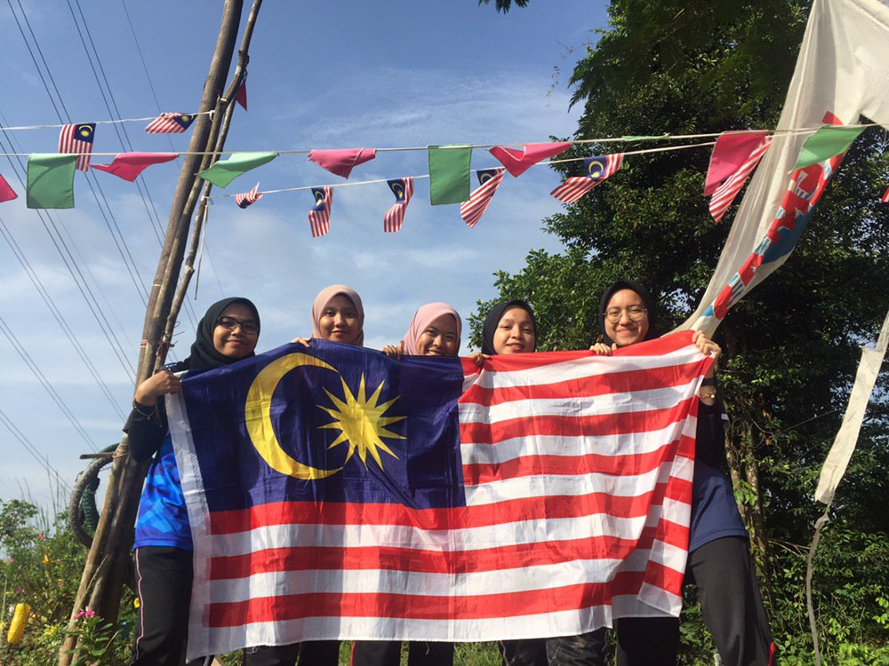
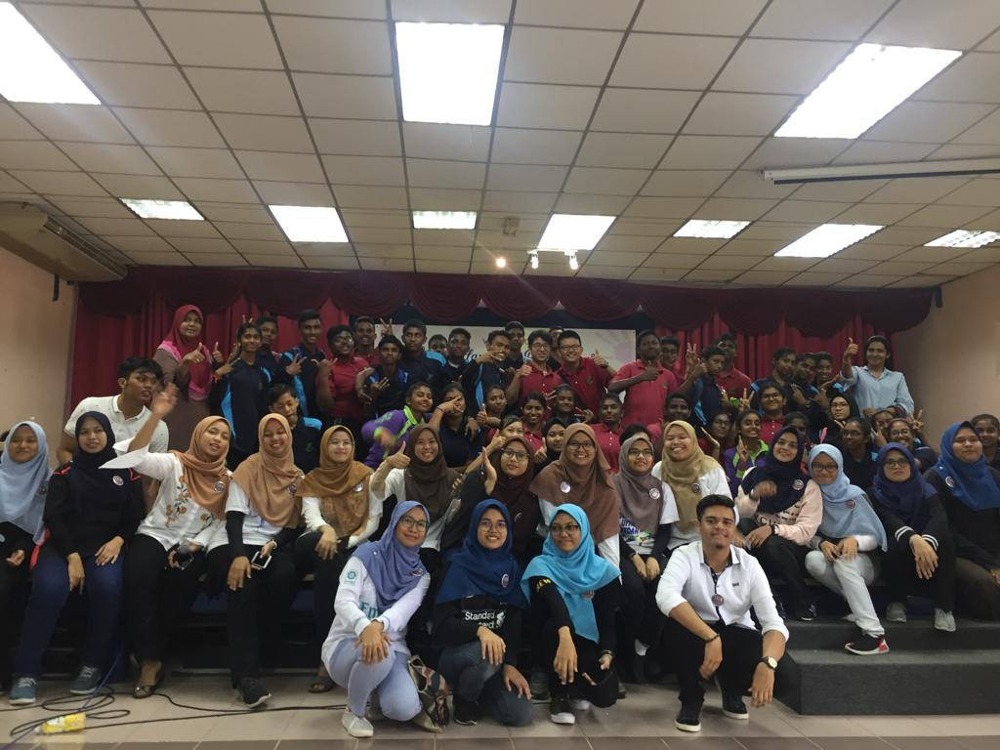

|  |
| UiTM Kedah Recreation Club held a hill climbing activity. This activity aims to maintain the health of the body while enjoying the scenery at the top of the hill. A total of 20 people participated in the activity including me and my friend. We started the trip at 8 am. We faced various challenges along the way to the top like slippery tracks, winding tracks and drizzle at that time. However, we continued our journey with enthusiasm and success arrived to reach the top at 1pm. |
|
| I had participated in theater competition that organized by Cultural Society at UiTM Merbok. At that time, I played role as main character as villagers and I get the first placed in this competition. I am so happy and enjoy in joining theater competition. I learned a lot of skills and knowledge to present on the stage with confident. |
|  |
| On 2 October 2019, me and my classmate handled the event, English Literature Program for primary schools' pupils. The event has been organized by English Lecture Society in UiTM Kedah. There are about 150 was participating in this programs. A lot of activities and games provided for pupils. They seem very excited and happy join this event. |